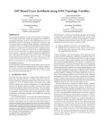
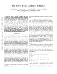
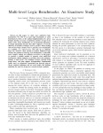

About me
 I am a PhD student in the Integrated Systems Laboratory
(LSI) at EPFL, Lausanne. I received my Bachelor degree in
Computer Science from the University of Amsterdam, and my MPhil
in Computer Science from the University of Cambridge. My
research interests include Boolean satisfiability, exploring
novel logic primitives, SAT based synthesis methods, machine
learning in general, and applying machine learning to EDA. I maintain
percy, which is a C++ header-only SAT-based exact
synthesis library. It is also one of the
EPFL logic synthesis libraries.
I am a PhD student in the Integrated Systems Laboratory
(LSI) at EPFL, Lausanne. I received my Bachelor degree in
Computer Science from the University of Amsterdam, and my MPhil
in Computer Science from the University of Cambridge. My
research interests include Boolean satisfiability, exploring
novel logic primitives, SAT based synthesis methods, machine
learning in general, and applying machine learning to EDA. I maintain
percy, which is a C++ header-only SAT-based exact
synthesis library. It is also one of the
EPFL logic synthesis libraries.
Publications
-

SAT-Based Exact Synthesis: Encodings, Topology Families, and Parallelism
In IEEE Transactions on Computer-Aided Design of Integrated Circuits and Systems April 2020 Publisher: IEEE -
Scalable generic logic synthesis: one approach to rule them all
In Design Automation Conference (DAC) Las Vegas, USA, June 2019 Publisher: ACM/IEEE -
Exact Synthesis of Boolean Functions in Majority-of-five Forms
In International Symposium on Circuits and Systems (ISCAS) Sapporo, Japan, May 2019 Publisher: IEEE -
On-the-fly and DAG-aware: Rewriting Boolean Networks with Exact Synthesis
In Design, Automation, and Test in Europe (DATE) Florence, Italy, March 2019 Publisher: IEEE -
Mapping Monotone Boolean Functions into Majority
In IEEE Transactions on Computers November 2018 Publisher: IEEE -
Integrated ESOP Refactoring for Industrial Designs
In International Conference on Electronics, Circuits, & Systems (ICECS) Bordeaux, France, December 2018 Publisher: IEEE -

SAT Based Exact Synthesis using DAG Topology Families
In Design Automation Conference (DAC) San Francisco, USA, June 2018 Publisher: ACM/IEEE -

The EPFL Logic Synthesis Libraries
In International Workshop on Logic & Synthesis (IWLS) San Francisco, USA, June 2018 -
Deep Learning for Logic Synthesis Algorithms
In International Symposium on Circuits and Systems (ISCAS) Florence, Italy, May 2018 Publisher: IEEE -
Practical Exact Synthesis
In Design, Automation, and Test in Europe (DATE) Dresden, Germany, March 2018 Publisher: IEEE -
Classifying Functions with Exact Synthesis
In International Symposium on Multi-Valued Logic (ISMVL) Novi Sad, Serbia, May 2017 Publisher: IEEE -
Deep Learning for Logic Optimization
In International Workshop on Logic & Synthesis (IWLS) Austin, USA, June 2017 -
A Novel Basis for Logic Rewriting
In Asia and South Pacific Design Automation Conference (ASP-DAC) Toky, Japan, January 2017 Publisher: IEEE -

Multi-level Logic Benchmarks: An Exactness Study
In Asia and South Pacific Design Automation Conference (ASP-DAC) Tokyo, Japan, January 2017 Publisher: IEEE -
LUT Mapping and Optimization for Majority-Inverter Graphs
In International Workshop on Logic & Synthesis (IWLS) Austin, USA, June 2016 -
NEM Relay Design with Biconditional Binary Decision Diagrams
In International Symposium on Nanoscale Architectures (NANOARCH) Boston, USA, July 2015 Publisher: IEEE